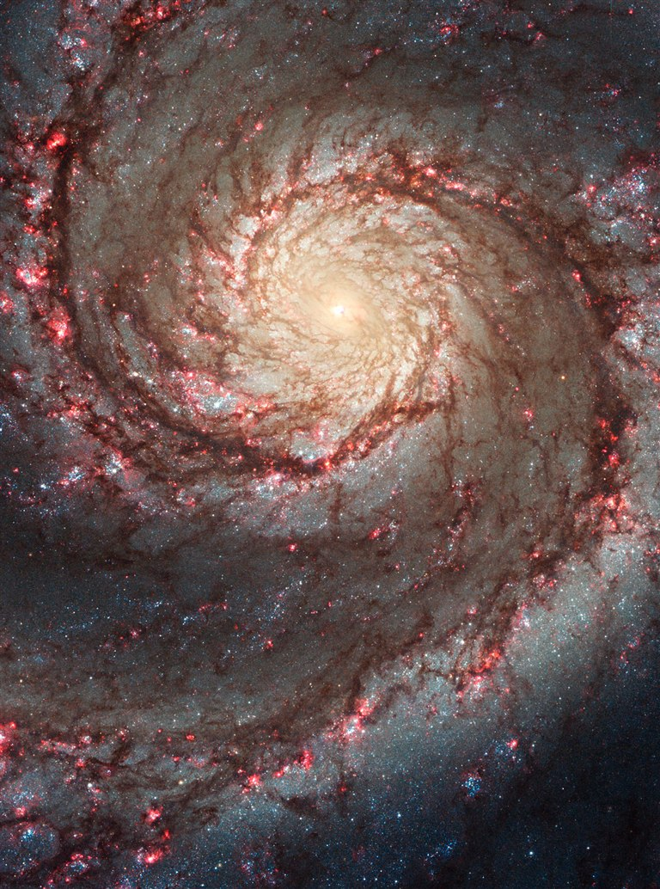

Learn the sky
Three things to look for in a telescope image.
What are spiral arms?
They’re winding lanes of stars, gas, and dust. Look for pink patches along M51’s arms where young stars light up clouds of hydrogen.
Where are stars born?
Stars form when dense pockets inside clouds of gas and dust collapse under gravity. The Orion Nebula gives us a close look at a region full of young stars.
Why observe in infrared?
Near-infrared light can travel through some of the dust that blocks visible light. Astronomers combine both kinds of observations to study what the dust hides.
Reading starlight


Visible lightDust map
NASA, ESA, M. Regan, B. Whitmore, R. Chandar, S. Beckwith, and the Hubble Heritage Team (STScI/AURA)
One galaxy.
Two views.
On the left, visible light shows the Whirlpool’s bright stars. On the right, a map made from visible and near-infrared observations reveals dust lanes that starlight can obscure.
Read the Hubble study